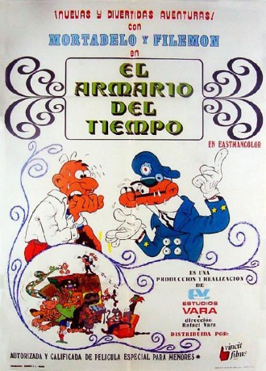

#5688 Die Verrückten Abenteuer von Clever & Smart
 
 IMDB-Wertung: 6.6 / 10
IMDB-Wertung: 6.6 / 10  Metascore: 0
Metascore: 0 
Collection of the following 7 short films from the series 'Mortadelo y Filemón, agencia de información': 'El armario del tiempo', 'En Waterloo', 'El Yeti', 'Misión increíble', 'Los impostores', 'El conde Mácula', and 'Maxiaventura en el mar'
Jahr: 1971
Dauer: 69 Minuten
FSK: 12
Land: Spanien Studio: Jugendfilm-VerleihTonspuren:
Untertitel:
Auflösung: SD (640x480) Größe: 699 MB
Genre: Komödie, Animation/Trick
Regisseur: Rafael Vara
Drehbuch: A&E Television Networks
Soundtrack:
Darsteller:
- José Martínez Blanco als Filemón / Impostor Filemón / Gato de Doña Úrsula / El gran Mórtilus / Campesino / Napoleón / Esquimal / Lince / Padre en zoo
- Víctor Ramírez als Mortadelo / Impostor Mortadelo
- José Moratalla als Primo Chiflágoras / Serafin / Trapecista
- José María Cordero als Presentador club de disfraces / General / Comisario
- Lola Cervantes als Doña Úrsula / Baronesa
- Joaquín Escola als Comisario / Voz del director / Sereno
Datei: X:\Comic-Trick\Clever & Smart\Verrückten Abenteuer von Clever & Smart, Die (1971, FSK12, 640x480).avi seit 10.03.2017
Festplatte: Comicverfilmungen+MusikCD
 Alle Filme aus Gruppe 'Comic-Trick\Clever & Smart'
Alle Filme aus Gruppe 'Comic-Trick\Clever & Smart'